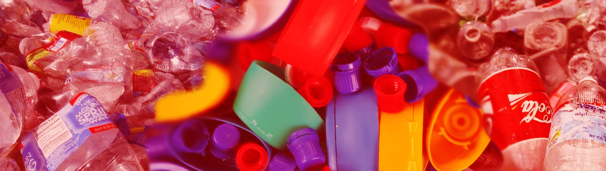

Plástico
O plástico é um material muito utilizado em diversos objetos comuns e de uso rápido do dia a dia, como canudos, sacolas e garrafas descartáveis, isso causa um acúmulo exagerado de lixo plástico nas ruas, que por sua vez entram para o esgoto e sempre acabam chegando aos mares muitas alternativas já foram criadas para tentar acabar com a poluição do plástico, alguns tentam diminuir o uso do material, como canudos metálicos, outros já tentam diminuir o tempo de decomposição do plástico, criando plástico com uma composição mais orgânica.
Por mais que já existam algumas soluções, existe um problema externo que se trata da viabilidade e sustentabilidade dessas medidas, alguns materiais usados como alternativa ao plástico podem ser muito caros, e dificultam o acesso a todos, e para resolvermos definitivamente esse problema, prescisamos de uma solução viável para todos.